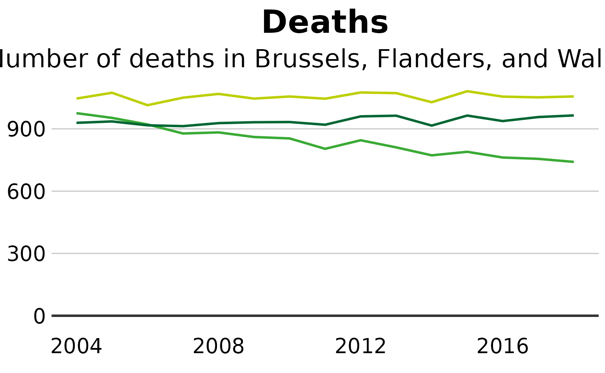
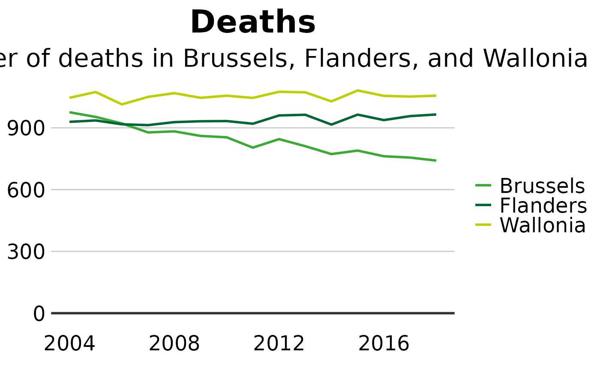

Cutsomize the legend
f-customize-legend.Rmd#>
#> Attaching package: 'dplyr'
#> The following objects are masked from 'package:stats':
#>
#> filter, lag
#> The following objects are masked from 'package:base':
#>
#> intersect, setdiff, setequal, union#> Warning in sciensano_style(): Please specify an available font
#> The first available font will be taken:
#> Using font:Remove the legend
Remove the legend to become one - it’s better to label data directly with text annotations.
Use guides(colour=FALSE) to remove the legend for a specific aesthetic (replace colour with the relevant aesthetic).
multiple_line + guides(colour=FALSE)You can also remove all legends in one go using theme(legend.position = "none"):
line + theme(legend.position = "none")
Change the position of the legend
The legend’s default position is at the top of your plot. Move it to the left, right or bottom outside the plot with:
line + theme(legend.position = "right")
Remove the legend title
Remove the legend title by tweaking your theme(). Don’t forget that for any changes to the theme to work, they must be added after you’ve called sciensano_style()!
+ theme(legend.title = element_blank())Rearrange the layout of your legend
If you’ve got many values in your legend, you may need to rearrange the layout for aesthetic reasons.
You can specify the number of rows you want your legend to have as an argument to guides. The below code snippet, for instance, will create a legend with 4 rows:
+ guides(fill = guide_legend(nrow = 4, byrow = T))You may need to change fill in the code above to whatever aesthetic your legend is describing, e.g. size, colour, etc.
Change the appearance of your legend symbols
You can override the default appearance of the legend symbols, without changing the way they appear in the plot, by adding the argument override.aes to guides.
The below will make the size of the legend symbols larger, for instance:
Add space between your legend labels
The default ggplot legend has almost no space between individual legend items. Not ideal.
You can add space by changing the scale labels manually.
For instance, if you have set the colour of your geoms to be dependent on your data, you will get a legend for the colour, and you can tweak the exact labels to get some extra space in by using the below snippet:
+ scale_colour_manual(labels = function(x) paste0(" ", x, " "))If your legend is showing something different, you will need to change the code accordingly. For instance, for fill, you will need scale_fill_manual() instead.
Make a continuous legend wider
If our legend is based on a continuous color scale, sometimes you may wish to increase its size. This can be accomplished by changing legend.key.width in the theme().
#Data for chart from gapminder package
cont_df <- dta %>%
filter(LEVEL == 3 &
REGIOJ %in% c("Belgium") &
MEASURE == "Deaths" &
METRIC == "Rate" &
AGEGRP == "ALL" &
SEX == "Both sexes" &
YEAR %in% 2014:2018) %>%
group_by(YEAR) %>%
slice_head(n = 20)
#Make plot
tile <- ggplot(cont_df, aes(x = YEAR, y = CAUSE)) +
geom_tile(aes(fill = VAL_MEAN)) +
sciensano_style() +
scale_fill_sciensano_c(palette = "red-yellow-green", reverse = TRUE) +
labs(title="Deaths",
subtitle = "Number of deaths") +
theme(legend.key.width = ggplot2::unit(2.5, "cm"))
#> Warning in sciensano_style(): Please specify an available font
#> The first available font will be taken:
#> Using font: